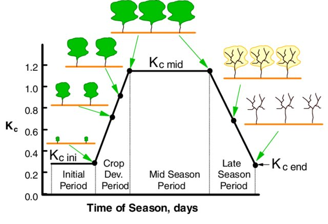

Crop Configuration File¶
The crop configuration file defines crop-specific growth stage information, including crop coefficients (Kc) parameterized by days since planting. These coefficients are essential for estimating crop evapotranspiration in sDRIPS. Default values for major global crops are derived from established literature. A schematic diagram illustrating the progression of Kc values across crop growth stages, is shown below (adapted from Allen, R. & Pereira, L.. (2009)).

This configuration file is extensible, allowing users to modify or add crops to accommodate local varieties, new cultivars, or crops with unique growth cycles (e.g., short-duration, high-yielding varieties). This flexibility ensures that sDRIPS can remain relevant across diverse agroecological settings.
A snippet of a crop configuration file is shown below:
# -------------------------------
# Crop configuration file
# -------------------------------
Rice:
"0-20": 1.1
"21-45": [linear, 1.1, 1.4, 25]
"46-105": 1.4
"106-115": [linear, 1.4, 1.0, 10]
"116-140": 1.0
Wheat:
"0-28": 0.5
"29-56": [linear, 0.5, 1.15, 28]
"57-112": 1.15
"113-119": [linear, 1.15, 0.7, 7]
"120-140": 0.7
# Ref: https://www.researchgate.net/publication/4875041_Actual_evapotranspiration_and_crop_coefficients_of_wheat_Triticum_aestivum_under_varying_moisture_levels_of_humid_tropical_canal_command_area/figures?lo=1
Adding a new crop to the existing configuration¶
To add a new crop, users should follow the syntax illustrated below.
CropName:
"startDay-endDay": value # Constant value
"startDay-endDay": [linear, startVal, endVal, duration] # Linear progression over 'duration' days
- startVal: value at the beginning of the stage
- endVal: value at the end of the stage
- durationDays: number of days over which the value increases/decreases linearly
Example of adding a new crop:
Crop_XXXX:
"0-28": 0.51
"29-56": [linear, 0.51, 1.29, 28]
"57-112": 1.29
"113-119": [linear, 1.29, 0.52, 7]
"120-140": 0.52